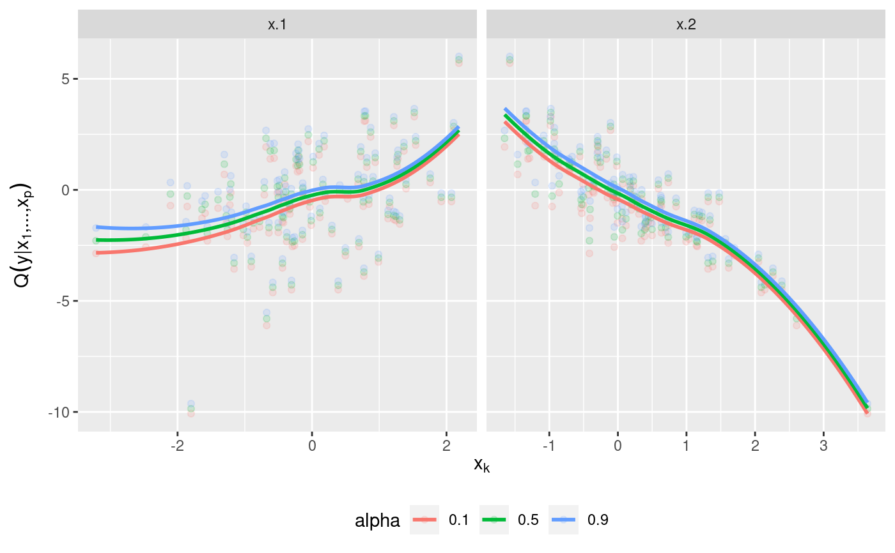
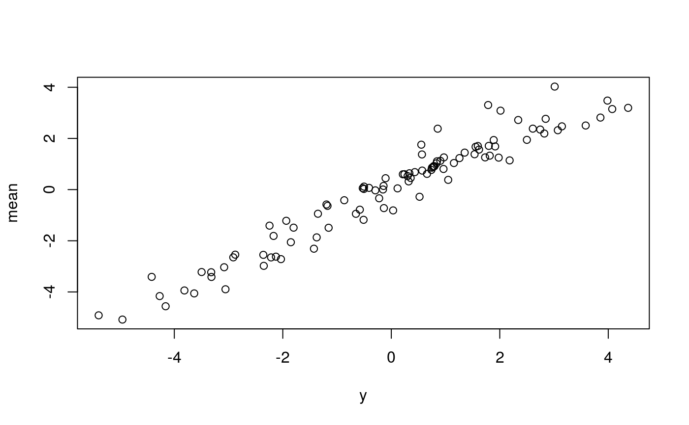

Sequential estimation of a regression D-vine for the purpose of quantile prediction as described in Kraus and Czado (2017).
an object of class "formula"; same as lm().
data frame (or object coercible by as.data.frame()) containing
the variables in the model.
see family_set argument of rvinecopulib::bicop().
selection criterion based on conditional log-likelihood.
"loglik" (default) imposes no correction; other choices are
"aic" and "bic".
the order of covariates in the D-vine, provided as vector of
variable names (after calling
vinereg:::expand_factors(model.frame(formula, data))); selected
automatically if order = NA (default).
list of options passed to kde1d::kde1d(), must be one value
for each margin, e.g. list(xmin = c(0, 0, NaN)) if the response and first
covariate have non-negative support.
optional vector of weights for each observation.
integer; the number of cores to use for computations.
further arguments passed to rvinecopulib::bicop().
if TRUE, vinereg assumes that marginal distributions have been taken care of in a preliminary step.
An object of class vinereg. It is a list containing the elements
the formula used for the fit.
criterion used for variable selection.
the data used to fit the regression model.
list of marginal models fitted by kde1d::kde1d().
an rvinecopulib::vinecop_dist() object containing the fitted
D-vine.
fit statistics such as conditional log-likelihood/AIC/BIC and p-values for each variable's contribution.
order of the covariates chosen by the variable selection algorithm.
indices of selected variables.
Use
predict.vinereg() to predict conditional quantiles. summary.vinereg()
shows the contribution of each selected variable with the associated p-value derived from a likelihood ratio test.
If discrete variables are declared as ordered() or factor(), they are
handled as described in Panagiotelis et al. (2012). This is different from
previous version where the data was jittered before fitting.
Kraus and Czado (2017), D-vine copula based quantile regression, Computational Statistics and Data Analysis, 110, 1-18
Panagiotelis, A., Czado, C., & Joe, H. (2012). Pair copula constructions for multivariate discrete data. Journal of the American Statistical Association, 107(499), 1063-1072.
# simulate data
x <- matrix(rnorm(200), 100, 2)
y <- x %*% c(1, -2)
dat <- data.frame(y = y, x = x, z = as.factor(rbinom(100, 2, 0.5)))
# fit vine regression model
(fit <- vinereg(y ~ ., dat))
#> D-vine regression model: y | x.2, x.1
#> nobs = 100, edf = 2, cll = 17.47, caic = -30.94, cbic = -25.73
# inspect model
summary(fit)
#> var edf cll caic cbic p_value
#> 1 y 0 -218.94275 437.8855 437.8855 NA
#> 2 x.2 1 73.02642 -144.0528 -141.4477 1.264121e-33
#> 3 x.1 1 163.38599 -324.7720 -322.1668 4.851392e-73
plot_effects(fit)
#> `geom_smooth()` using method = 'loess' and formula = 'y ~ x'

# model predictions
mu_hat <- predict(fit, newdata = dat, alpha = NA) # mean
med_hat <- predict(fit, newdata = dat, alpha = 0.5) # median
# observed vs predicted
plot(cbind(y, mu_hat))

## fixed variable order (no selection)
(fit <- vinereg(y ~ ., dat, order = c("x.2", "x.1", "z.1")))
#> D-vine regression model: y | x.2, x.1, z.1
#> nobs = 100, edf = 2, cll = 17.47, caic = -30.94, cbic = -25.73